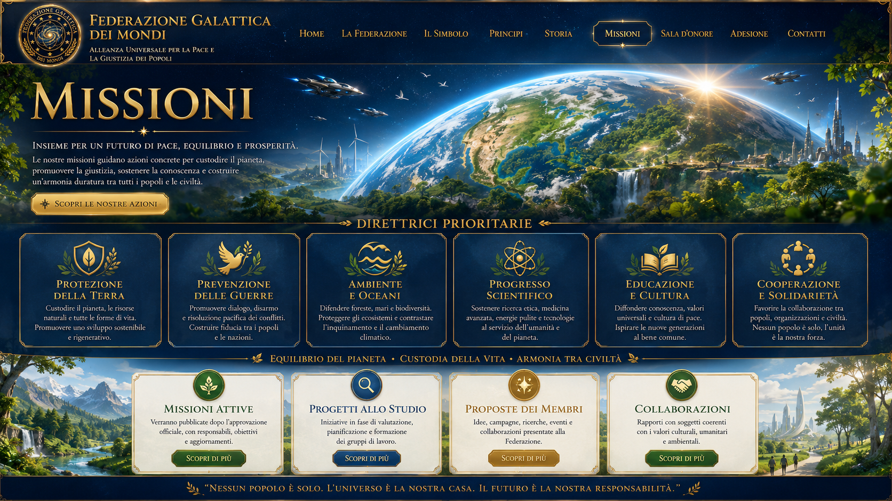

FEDERAZIONE GALATTICA
FEDERAZIONE GALATTICAMissioni della Federazione
Per un futuro di pace, armonia e progresso per tutti i mondi abitati.
Ambiti di missione
Protezione della Terra
Difesa dell’ambiente, della biodiversità e delle risorse naturali.
Prevenzione delle guerre
Dialogo, diplomazia e cultura della pace.
Progresso scientifico
Ricerca e innovazione al servizio dell’umanità.
Aiuto umanitario
Solidarietà concreta e tutela della dignità.
Risveglio della coscienza
Responsabilità personale e crescita collettiva.
